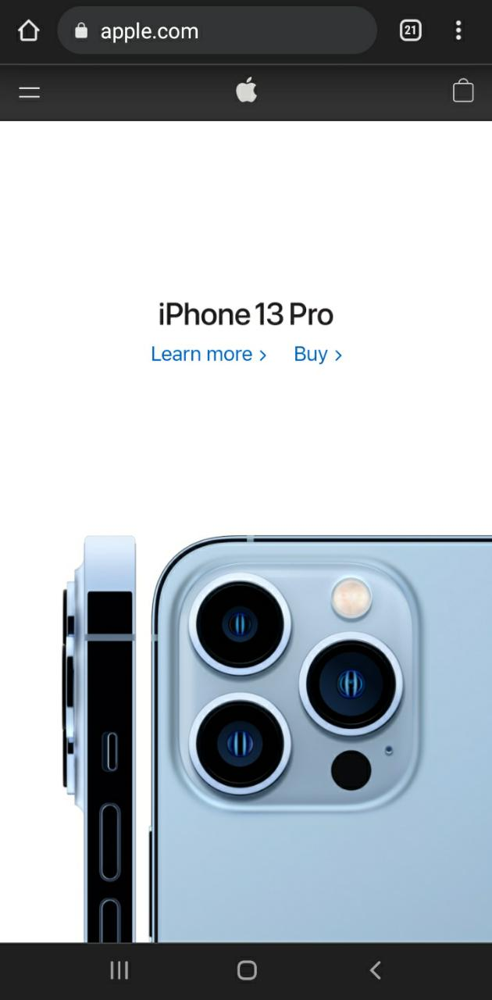

Fitt's Law
PlayStation
playstation.comOn mobile phones, you can identify Fitt's Law in the size of the buttons, as we see on this page, that PlayStation makes the buttons much larger so that they are easily accessible for those who use the site from smartphones and without much distance.
PARC: Contrast
E! Online
eonline.comHere on this page, we can notice the contrast in the colors, the color that predominates, on the whole page is white, but the photos that have black around make the user focus more on it, the same with the title with the blue highlight. It is noticeable that it is information that stands out more than the other information on the page.
White Space and Clean Design
Apple
apple.city Here the white space on the page makes the page look more sophisticated, on the one hand, it may look simple, but on the other hand, it makes it easier for the user to see the information and it doesn't look loaded, apple's page in general uses white space to counteract with the colors and highlights that stand out in other parts of the page.